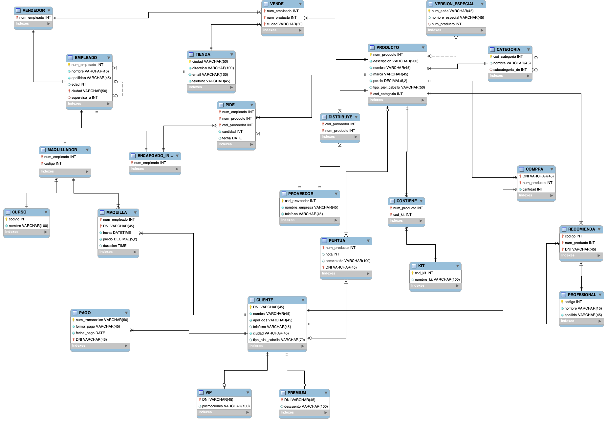
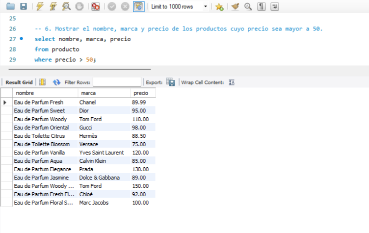
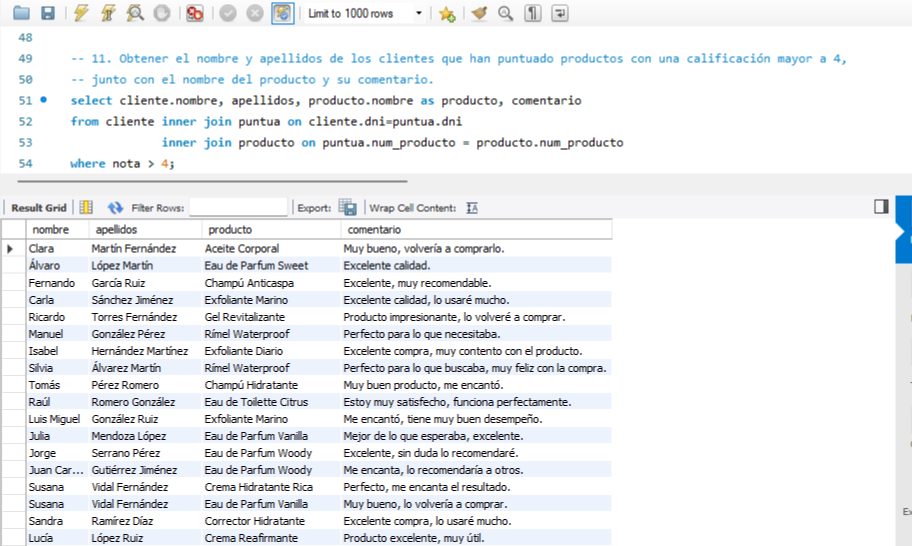
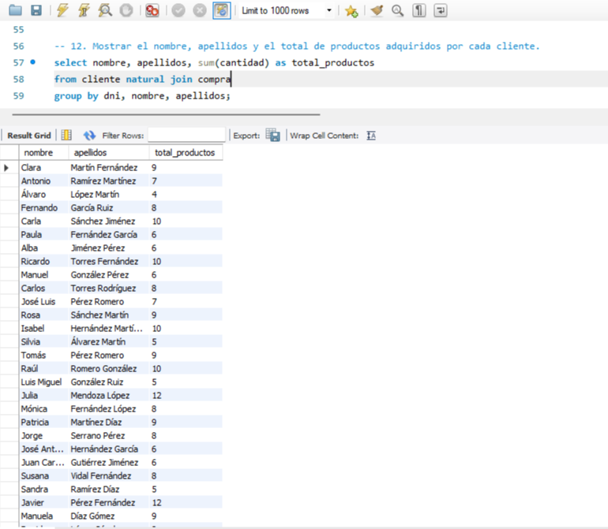
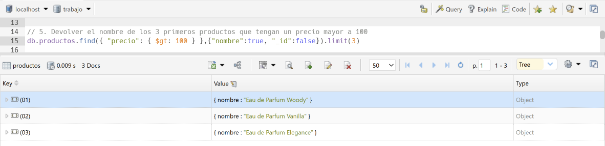
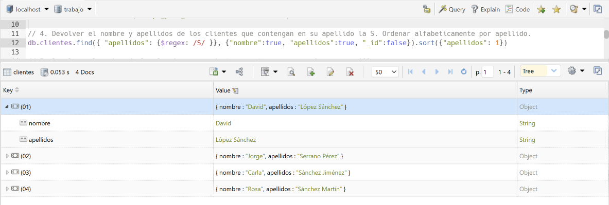
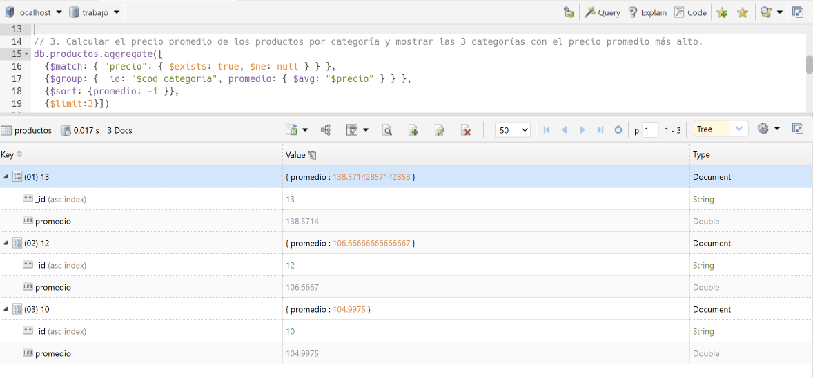
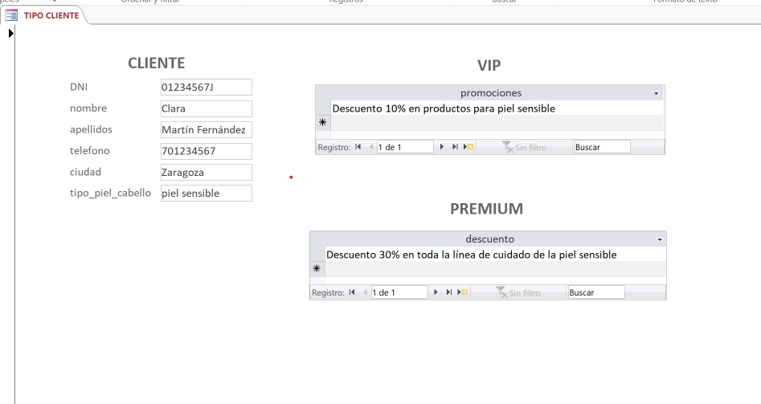
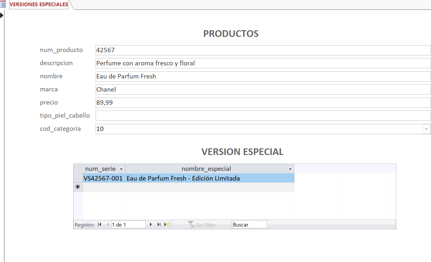
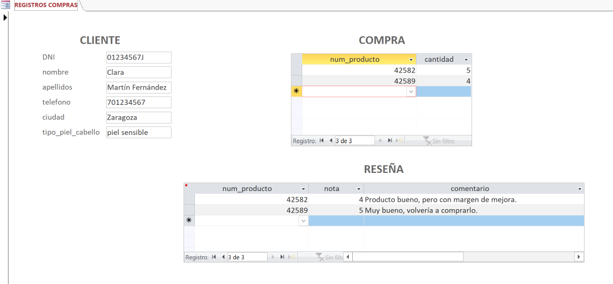

PROYECTO ACADÉMICO · GRADO EN ESTADÍSTICA · UNIVERSIDAD DE SEVILLA
Diseño y gestión de bases de datos
Diseño e implementación de una base de datos para una tienda de cosméticos, combinando tecnologías relacionales y NoSQL, consultas y formularios para la gestión de información.
Descripción del proyecto
Proyecto centrado en el diseño y desarrollo de una base de datos para una tienda de cosméticos, con el objetivo de organizar la información relacionada con los productos, las categorías, las tiendas, los empleados, los proveedores y los clientes.
Se trabajó con bases de datos relacionales y NoSQL, realizando consultas y operaciones para gestionar la información. También se diseñaron formularios en Microsoft Access para facilitar la introducción y consulta de los datos.
Desarrollo del proyecto
1. Diseño conceptual
Se diseñó el modelo entidad-relación de la base de datos, identificando las principales entidades del negocio, sus atributos y las relaciones existentes entre ellas. El modelo incluye información sobre clientes, productos, empleados, proveedores, tiendas, compras y servicios de maquillaje, permitiendo representar de forma estructurada los procesos de una tienda de cosméticos.

Durante esta fase se realizó la identificación de las entidades principales, la definición de claves primarias y foráneas, así como el modelado de relaciones uno a muchos y muchos a muchos. Este diseño sirvió como base para la posterior implementación de la base de datos en MySQL y su adaptación al modelo documental de MongoDB.
- Diseño del modelo entidad-relación.
- Definición de claves primarias y foráneas.
- Modelado de relaciones entre entidades.
- Estructuración de clientes, productos, empleados y proveedores.
- Preparación del esquema para su implementación en MySQL.
2. Implementación de la base de datos y análisis con SQL
Una vez definido el modelo conceptual, se implementó la estructura relacional de la base de datos mediante MySQL. Se crearon las tablas correspondientes a las distintas entidades del sistema, definiendo claves primarias, claves foráneas y restricciones de integridad para garantizar la consistencia de los datos.
Posteriormente se desarrollaron consultas SQL para obtener, relacionar y analizar la información almacenada en la base de datos. Se utilizaron operaciones de filtrado, combinación de tablas y agregación de datos para resolver diferentes casos de negocio relacionados con productos, clientes y compras.
Filtrado de productos por precio
Consulta utilizada para identificar los productos con un precio superior a 50 €, permitiendo analizar los artículos de mayor valor económico dentro del catálogo.

Análisis de valoraciones de clientes
Consulta desarrollada para relacionar clientes, productos y comentarios asociados a valoraciones superiores a cuatro puntos, permitiendo identificar opiniones positivas sobre los productos.

Análisis de compras por cliente
Consulta orientada al análisis de datos, calculando el número total de productos adquiridos por cada cliente mediante funciones de agregación y agrupación de registros.

3. Gestión de datos con MongoDB
Parte de la información almacenada en la base de datos relacional fue adaptada al modelo documental de MongoDB, organizando los datos en colecciones y documentos. Se trabajó con NoSQLBooster para realizar consultas, filtrados y operaciones de agregación sobre la información almacenada.
El uso de MongoDB permitió explorar un enfoque diferente al modelo relacional tradicional, aprovechando la flexibilidad de los documentos para almacenar y analizar información relacionada con clientes y productos.
Filtrado de productos de alto valor
Consulta desarrollada para identificar productos con precios superiores a 100 €, permitiendo analizar los artículos de mayor valor económico disponibles en el catálogo.

Exploración y filtrado de información de clientes
Consulta orientada a la búsqueda y filtrado de registros dentro de la colección de clientes, permitiendo localizar información específica y ordenar los resultados según distintos criterios.

Análisis de precios por categoría
Utilización del framework de agregación de MongoDB para calcular métricas y resumir información, obteniendo las categorías con mayor precio medio de producto.

4. Diseño de formularios en Microsoft Access
Con el objetivo de facilitar la gestión y consulta de la información almacenada en la base de datos, se desarrollaron distintos formularios en Microsoft Access. Estas interfaces permiten visualizar, introducir y modificar datos de forma más intuitiva sin necesidad de interactuar directamente con las tablas.
Los formularios fueron diseñados para gestionar información relacionada con clientes, productos, compras y servicios de maquillaje, mejorando la accesibilidad y organización de los datos.
Gestión de clientes VIP y Premium
Formulario destinado a la administración de las promociones y descuentos asociados a los distintos tipos de clientes, permitiendo identificar de forma sencilla si un cliente dispone de ventajas especiales.

Consulta de productos y versiones especiales
Interfaz diseñada para visualizar la información de cada producto, incluyendo sus características y las posibles versiones especiales asociadas.

Registro de compras y valoraciones
Formulario orientado al seguimiento de las compras realizadas por los clientes, permitiendo registrar productos adquiridos, cantidades y valoraciones asociadas a cada producto.

Resultados
Se desarrolló el diseño conceptual y lógico de una base de datos para una tienda de cosméticos, implementando su estructura relacional mediante MySQL Workbench y definiendo las tablas, claves y relaciones necesarias.
Se realizaron consultas SQL para recuperar, relacionar y analizar información sobre clientes, productos y compras, utilizando filtros, combinaciones de tablas y funciones de agregación. También se diseñaron formularios en Microsoft Access para facilitar la consulta y gestión de los datos.
Además, se trabajó con MongoDB para adaptar parte de la información al modelo documental, realizando consultas, modificaciones y operaciones de agregación. El proyecto permitió aplicar diferentes técnicas de diseño, gestión y consulta de bases de datos relacionales y NoSQL.